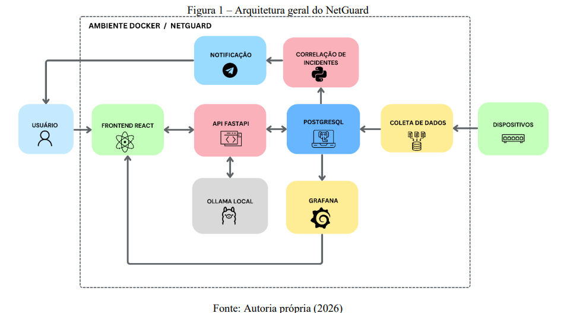
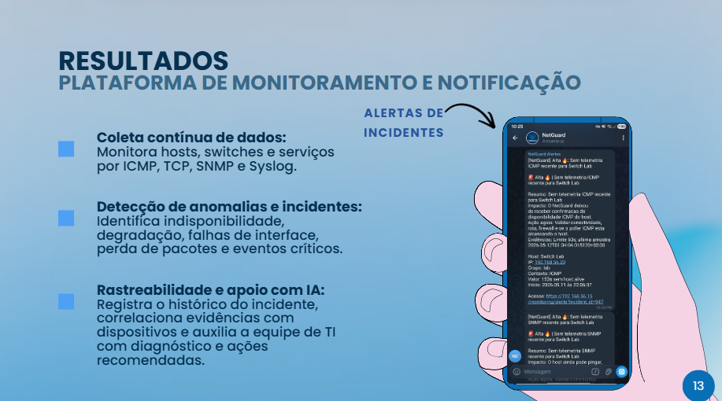

01 / TCC · MONITORAMENTO DE REDES
NetGuard
Plataforma proativa de monitoramento e rastreabilidade de incidentes em redes corporativas. O sistema coleta métricas via ICMP, TCP e SNMP, apresenta dados em dashboards e ajuda a investigar incidentes com apoio de IA.

